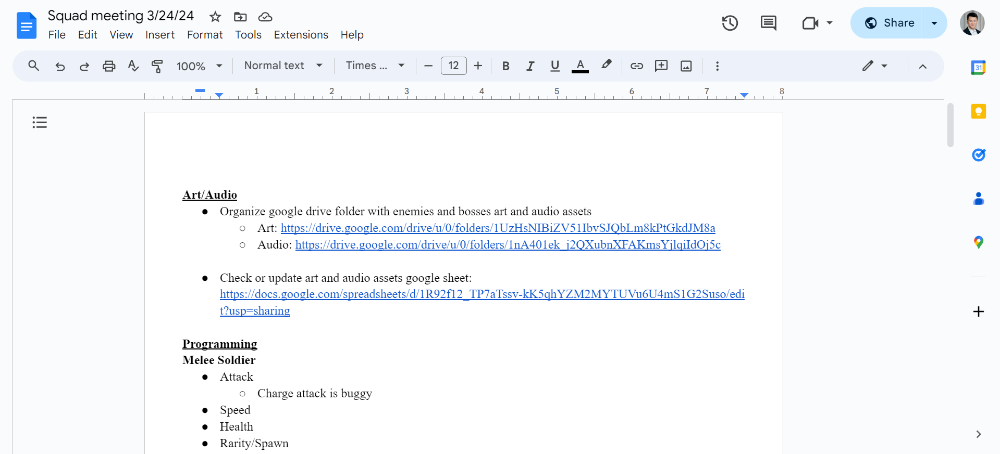
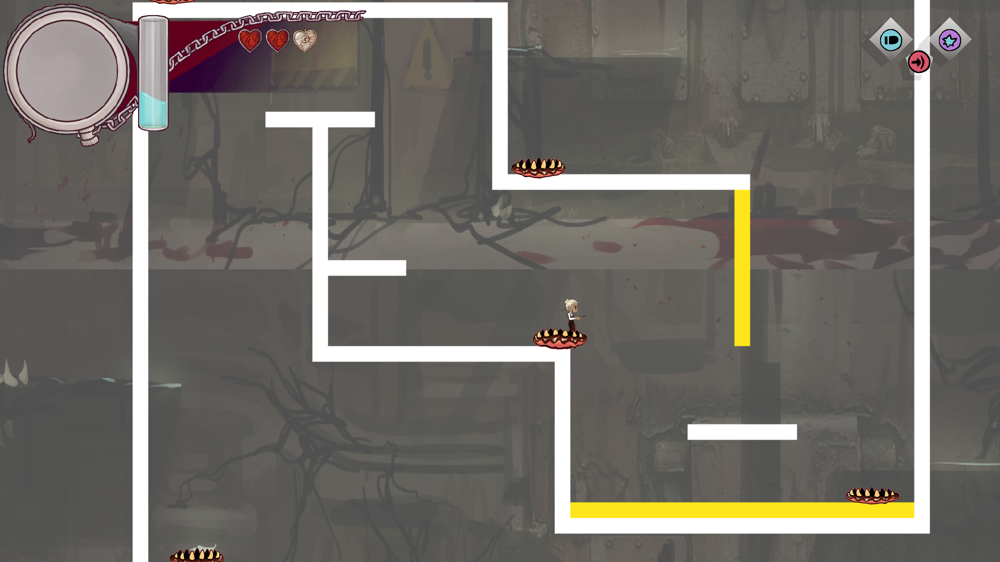
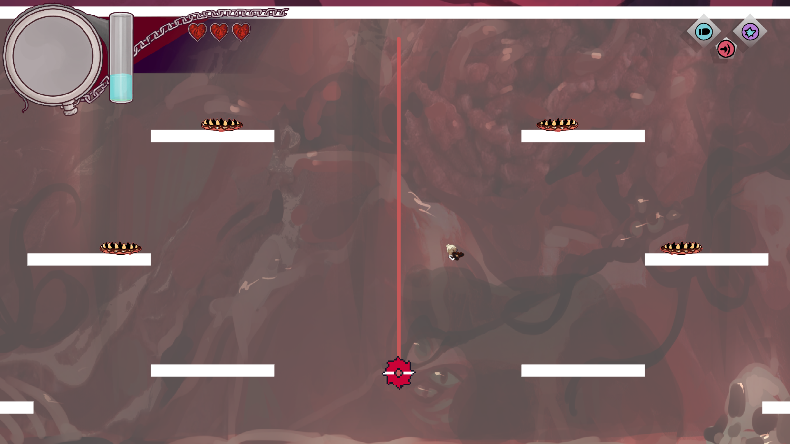
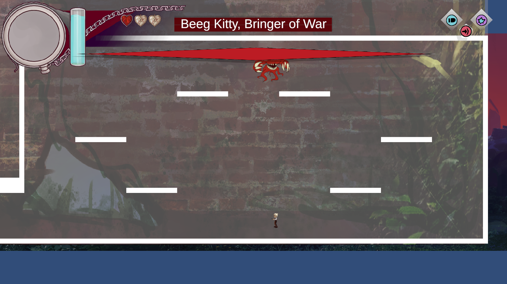
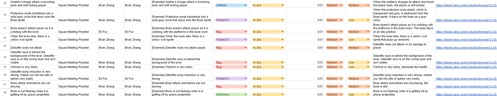
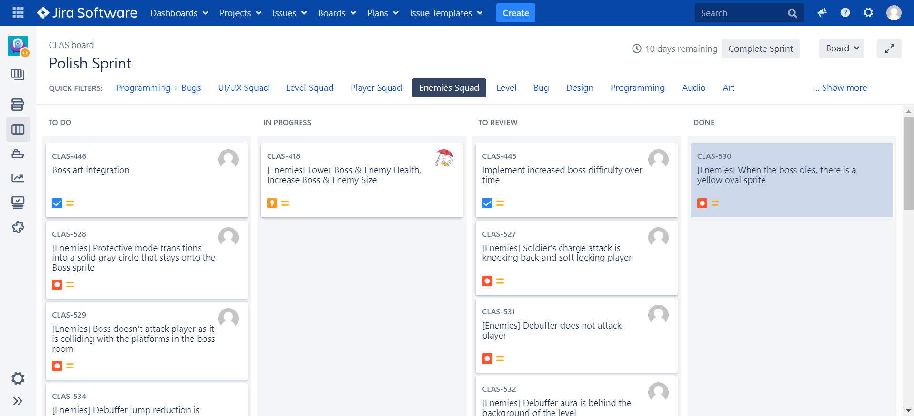

Mid Sprint 3 + QA 3
Production Sync-up Meeting
In the production sync-up meeting, we reviewed the progress of Sprint 3, which is nearing completion, and discussed the
new features that need to be integrated into the game for the final polishing, balancing, and quality assurance phases
before the game development showcase. The artists are in the process of finalizing the sprites for all game assets, while
the programmers are busy incorporating these features into the prototype. Additionally, we covered the importance of conducting
playtests during squad meetings, ensuring that tasks are created in the feedback tracker, and that bug-related tasks are logged in Jira.
Leads Meeting
During the lead meeting, we discussed the current state and overall development cycle of the prototype, focusing on its current content.
We identified several key additions needed to enhance the game: art illustrations for hazards, an infinite stage loop that continues until
the player dies, art assets for the last two enemies, unique projectiles for each ranged enemy, and designs for the game platform and background.
Studio-wide Meeting
During the studio-wide meeting, we conducted a Task Breakdown and Implementation Questions session to evaluate which features are currently
in the game and which are not. I prepared a document detailing every aspect of the game's enemies for thorough review. We discovered that the
art department had not uploaded all of the final sprites and animations to Google Drive, a crucial oversight. Additionally, we had overlooked the
need to create distinct projectiles for ranged enemies. Beyond these issues, the programmers have been diligently polishing the existing features
of each enemy and rectifying issues with others.
Task Breakdown Implementation Questions Documentation
In the Art and Audio departments, efforts are underway to meticulously organize the Google Drive folders for enemy and boss art and audio assets,
alongside updating a comprehensive Google Sheets document that tracks the status of these assets to streamline the development process.
On the programming front, several enemy types are receiving attention for various issues: the Melee Soldier's buggy charge attack and jumping mechanics,
the Ranged Soldier's problematic behavior on falling platforms, the Hybrid Soldier's overall performance, and the Drone's need for increased chase speed,
reduced health, and adjustments to prevent it from moving off-screen or behind background imagery. Additionally, Infestation types, Debuffer, and Warlock
enemies are being fine-tuned for attack speed, health, and movement, with a specific focus on adjusting the Debuffer's targeting of airborne players.
Significant enhancements are planned for the Boss character, including new attack modes (Concussive, Broodmother, Portal) with Camouflage mode as a
lower priority, improvements in attack randomization (fireworks and turrets), speed and health adjustments, and efforts to stabilize spawn rates and
refine movement, all aimed at elevating the gameplay experience.

Production Mentorship
In our recent production mentorship session, we had the opportunity to engage with Nico Williams from Schell Games, which proved to be an insightful exchange.
The session included the creation of slides focusing on risk register items, showcasing a graph that Nico finds instrumental for evaluating high-level priorities.
We delved into the project's timeline, identifying critical focus areas across pre-production, the game development cycle, and post-production phases.
Nico generously provided a recording aimed at studio leads, illustrating the optimal method for crafting timelines. This method emphasizes task assignment
based on the number of team members, strategies for scope reduction or initiating with a smaller scope to gradually introduce new, case-study-related features.
He further demonstrated how task interdependencies could enhance feature development and highlighted the importance of dedicating the final weeks to polishing,
balancing, and QA, ensuring a smooth wrap-up.
Playtesting Project Classic Prototype
The latest update to the prototype enriches the game with a variety of enhancements and new features. It now boasts detailed backgrounds, sprites for the infestation
and drones, and an intuitive user interface for selecting classes and weapons. Players can now see their health and mana levels through newly added bars, while a
specific health bar for the boss has been introduced to track its status during encounters. The boss itself has been brought to life with a dedicated sprite and a
sophisticated system for randomizing its attack patterns, including the implementation of several attack modes. Additionally, the game world feels more alive with
the inclusion of a shopkeeper sprite. Players will also notice improvements in the visuals and functionality of weapon sprites, along with refined mechanics for player
attacks and movement, all contributing to a more immersive and engaging gameplay experience.



Production Work Session
During the production mentorship session, producers and the executive director outlined the future operational blueprint for WolverineSoft Studio, with an emphasis on streamlining processes for subsequent semesters. A key initiative
involves collaborating with a programmer to automate the organization of files within the Google Drive folder. This automation aims to ensure that future producers can easily identify essential tasks for each development cycle,
ensuring seamless access to critical documents such as Google Docs, Sheets, Slides, and Forms, which are vital for tracking the progress of directors and squad members. A significant point of discussion was the current redundancy
in the Google Forms structure, which complicates the recruitment process within the student organization. The session also included an analysis of recruitment strategies employed by other student organizations at the University of Michigan,
providing a comparative perspective to refine and improve our approach.
Update Feedback Tracker
In our latest game build, we've encountered several gameplay and visual issues that need addressing. The soldier's charge attack causing a player soft lock, the Boss's protective shield not disappearing correctly, and collision problems that
prevent the Boss from attacking the player are major concerns. Additionally, unexpected graphical anomalies, such as a random yellow oval upon the Boss's defeat, along with the Debuffer's non-functional attack and misplaced aura layer, disrupt
gameplay flow. The Warlock's excessive health and the Debuffer's overly potent jump reduction further imbalance the game. Critical animations for the Boss are also failing to trigger, removing essential visual feedback during combat.
Addressing these issues is crucial for improving gameplay smoothness and player engagement.

Logging and Updating Tasks on Jira
These identified gameplay and visual issues have been meticulously logged into Jira, providing a structured and accessible platform for our programming and quality assurance (QA) teams to collaboratively address them. Each issue, from the Soldier's
charge attack causing player soft locks to the Boss's faulty protective mode visualization and the Debuffer's invisible aura, has been documented as individual tickets. These tickets detail the problem, expected behavior, and, when applicable, steps to
reproduce the issue, ensuring that both programmers and QA members have a clear understanding of the task at hand. The use of Jira not only facilitates efficient tracking and prioritization of these bugs but also encourages ongoing communication and
updates on progress between team members. By leveraging Jira's capabilities, we aim to streamline the resolution process, fostering a more cohesive and productive development environment that will lead to timely enhancements in game quality and player experience.

Midweek Update Checkup
With just a few weeks remaining, it's crucial to address the outstanding art, audio, and programming tasks highlighted in the preview channel. While midweek updates will continue to shed light on new features being added, our primary focus will shift towards refining
and balancing existing content in the game, meaning updates on new features will be limited. Among the recent enhancements, we've introduced currency drops, enemy damage particle effects, a turret attack for the boss, distinctive sound effects for the Warlock, engaging
music for aerial boss encounters, and comprehensive sound effects covering attacks, hits, and movements for all enemies, along with enriched boss animations. These additions are pivotal in enriching the gameplay experience, and our attention will now pivot to optimizing \
these features for a polished final product.
Hours Breakdown
Mid Sprint 3
- Production Sync-up Meeting (30 minutes)
- Leads Meeting (1 hour)
- Studio-wide Meeting (2 hours 15 minutes)
- Studio Announcements – 11:00 AM ~ 11:20 AM (10 mins)
- Project Announcements – 11:20 AM ~ 11:30 AM (20 mins)
- Squad Meeting – 11:30 AM ~ 12:15 PM (45 mins)
- Department Meeting – 12:15 PM ~ 1:15 PM (60 mins)
- Task Breakdown Implementation Questions Documentation (30 mins)
- Production Mentorship (45 mins)
- Playtesting Project Classic Prototype (2 hours)
- Production Workshop Session (2 hours)
QA 3
- Production Sync-up Meeting (30 minutes)
- Leads Meeting (1 hour)
- Studio-wide Meeting (3 hours)
- Studio Announcements – 11:00 AM ~ 11:20 AM (10 mins)
- Project Announcements – 11:20 AM ~ 11:30 AM (20 mins)
- Squad Meeting – 11:30 AM ~ 12:15 PM (45 mins)
- Department Meeting – 12:15 PM ~ 1:15 PM (60 mins)
- Design/Production Meeting – 1:15 PM ~ 2:15 PM (60 mins)
- Update Feedback Tracker (45 mins)
- Logging and Updating Tasks on Jira (1 hour 15 mins)
- Playtesting Project Classic Prototype (1 hour 45 mins)
- Production Mentorship (30 mins)
- Midweek Update Checkup (15 mins)
Time Investment: 3 credits x 2 x 3 hours = 18 hours